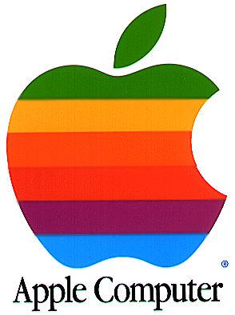

Is the much beloved Apple the new Microsoft? First there was IBM, the big all
crushing corporate machine that was humbled by the next big giant in the form of
Microsoft, so it seems Apple’s turn is long overdue. The next few weeks are
crucial to this crossroads in which Apple finds itself: It owes a HUGE amount to
the BSD (an open source Unix clone) which is the foundation for not just OS X,
but the iPhone and now the iPod Touch. Basically without the kernel that runs
these fantastic devices, Apple would still be up shit creek without a paddle.
Granted the iPod would have been a huge success probably still, but OS X’s core
is the foundation for the real money making Apple will do over the next few
years, a point that is not lost on Mr. Jobs as the company intelligently markets
different segments to different markets of which I have first hand experience
of: Go to the Apple site for education and they extol the brilliance of a
Macbook and make they deal sweeter by throwing in an iPod Nano. But if you go to
a link I was provided in a college advert; they bring to a page pointing out key
areas a mac can make a difference. I picked Computer Science naturally, and the
site extolled the virtues of Open Source, a Unix base and programming tools like
Xcode.
{kind=link}
So whats the big deal? Well the fact the new iPods are locked solid with a new encrypted hash, meaning nothing besides iTunes will work with the new iPods. The iPhone also gets similar treatment, no third party development is allowed: no only Apple Applications are allowed. This stinks to high heavens of monopolistic behavior akin to Microsoft or IBM of old. Not to mention gouging both networks and customers with the iPhone. Apple may not yet be important enough to endure the wrath of the European Union Antitrust bodies or the US Department of Justice; but they are certainly on a slippery slope as the popularity of their products and lock in seem to increase day by day. Interestingly enough Apple may be also feeling the heat of Linux, with the much-famed poster child of the free software revolution now making it into Apple’s marketing material; meaning Apple sees Linux as a future threat. After taking so much from Open Source, including the GNU Tool chain, the BSD Kernel, the Samba Networking protocols to interact with Windows (to name a few) Apple should be a good free software citizen and not aggravate core customers like myself of which Open source is a key factor in OS X.